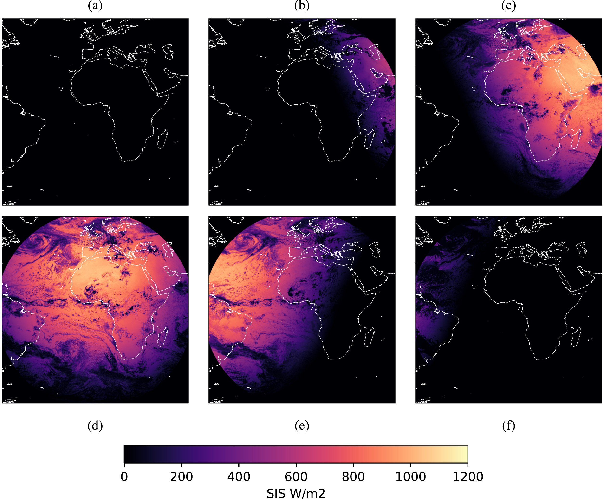

|
Quentin Paletta I am a Research Fellow and Technical Officer at the Philab of the European Space Research Institute in Frascati in collaboration with the Climate Office of the European Space Agency (ESA) in Harwell, where I work on Earth observation and machine learning for climate and energy. üåç üõ∞Ô∏è Since June 2025, I started a secondment at the International Energy Agency (IEA) to explore the potential of Earth observation for the energy sector. ‚ö°Ô∏è Previously at the University of Cambridge, I have developed deep learning algorithms for advancing solar nowcasting based on cloud cover observations from sky cameras and weather satellites. üå§Ô∏è Also working on solar energy meteorology? Don't hesitate to contact me to join our community on Slack! (80+ researchers and engineers from around the world). |
{kind=link}
ResearchI'm interested in computer vision, machine learning, earth observations and energy. Much of my research is about developing innovative methods using cloud cover observations for solar energy forecasting. Representative papers are highlighted. Looking for help to find or conduct a project on Earth observation, climate and/or energy? Please do not hesitate to reach out! |

|
World Energy Outlook 2025
International Energy Agency (IEA), 2025
report / BibTeX The IEA’s flagship World Energy Outlook (WEO) is the most authoritative source of global energy analysis and projections. Updated annually to reflect the latest energy data, technology and market trends, and government policies, it explores a range of possible energy futures and their implications for energy security, access and emissions. |

|
Implicit Neural Representation for Ice Sheet Surface Elevation Reconstruction to Assess Elevation Change in High-Spatiotemporal Resolution
Peter Naylor, Andreas Stokholm, Natalia Havelund Andersen, Nikolaos Dionelis, Quentin Paletta, Sebastian Bjerregaard Simonsen, Preprint, 2025 preprint / BibTeX This study introduces a novel Implicit Neural Representation method trained on sparse satellite altimeter data (covering just 5% of the domain) to reconstruct missing ice surface elevation observations for Greenland’s Petermann Glacier, achieving an 84% performance improvement over current baselines and enabling dynamic ice sheet surface mapping over 12 years and 20,000+ km². |
|
Deep Learning-Based Downscaling of Seviri Data for High Spatial Resolution Near-Real-Time Wildfire Monitoring
Maria Dekavalla, Quentin Paletta, Chrysovalantis Tsiakos, Angelos Amditis, Preprint, 2025 preprint / BibTeX The ESA-funded ASIMOV project employs multimodal deep learning to enhance SEVIRI satellite data, achieving 1 km resolution for near-real-time wildfire monitoring, comparable to LEO sensors like MODIS. |
|
|  |
Sky image-based solar forecasting using deep learning with heterogeneous multi-location data: Dataset fusion versus transfer learning
Alessandro Sebastianelli, Federico Serva, Andrea Ceschini, Quentin Paletta, Massimo Panella, Bertrand Le Saux, Remote Sensing of Environment, 2024 paper / BibTeX Day-ahead surface solar irradiance forecasting using machine learning validated with in situ measurements of the Baseline Surface Radiation Network (BSRN). |
|
Vision-Based Solar Forecasting with Deep Learning
Quentin Paletta, Engineering Department of the University of Cambridge, 2024 manuscript / BibTeX My PhD thesis! |
|
|
|
SolarBench (ex-SkyImageNet): Towards a large-scale sky image dataset for solar power forecasting.
Yuhao Nie, Quentin Paletta, Sherrie Wang, Tackling Climate Change with Machine Learning workshop (ICLR), 2024 paper / project / BibTeX A multilocation satellite and sky image dataset for solar forecasting and atmospheric sciences. |

|
Sky image-based solar forecasting using deep learning with heterogeneous multi-location data: Dataset fusion versus transfer learning
Yuhao Nie, Quentin Paletta, Andea scott, Luis Martin Pomares, Guillaume Arbod, Sgouris Sgouridis, Joan Lasenby, Adam Brandt, Applied Energy, 2024 paper / BibTeX Comparative study between local training, global training, and transfer learning for solar nowcasting based on sky images. |
|
Improving cross-site generalisability of vision-based solar forecasting models with physics-informed transfer learning
Quentin Paletta, Yuhao Nie, Yves-Marie Saint-Drenan, Bertrand Le Saux, Energy Conversion and Management, 2024 paper / BibTeX Forecasting solar energy accurately is good, generalising beyond the location where the model was trained is even better! Here, we explore diverse zero-shot and few-shot learning tasks based on a model pre-trained at another location. |
|

|
SkyGPT: Probabilistic Ultra-short-term Solar Forecasting Using Synthetic Sky Images from Physics-constrained VideoGPT
Yuhao Nie, Eric Zelikman, Andea scott, Quentin Paletta, Adam Brandt, Advances in Applied Energy, 2024 paper / BibTeX We introduce SkyGPT, a physics-informed stochastic video prediction model that is able to generate multiple possible future images of the sky with diverse cloud motion patterns, by using past sky image sequences as input. |

|
Open-source ground-based sky image datasets for very short-term solar forecasting, cloud analysis and modeling: A comprehensive survey
Yuhao Nie, Xiatong Li, Quentin Paletta, Max Aragon, Andea scott, Adam Brandt, Renewable and Sustainable Energy Reviews, 2024 paper / BibTeX Comprehensive survey of 72 open-source ground-based sky image datasets for very short-term solar forecasting applications. |

|
Advances in Solar Forecasting: Computer Vision with Deep Learning
Quentin Paletta, Guillermo Terrén-Serrano, Yuhao Nie, Binghui Li, Jacob Bieker, Wenqi Zhang, Laurent Dubus, Soumyabrata Dev, Cong Feng, Advances in Applied Energy, 2023 paper / BibTeX Literature review on the field of computer vision-based solar forecasting with a particular focus at the application of deep learning to process cloud cover observations collected by sky cameras or meteorological satellites. |

|
Omnivision forecasting: Combining satellite and sky images for improved deterministic and probabilistic intra-hour solar energy predictions
Quentin Paletta, Guillaume Arbod, Joan Lasenby, Applied Energy, 2023 paper / BibTeX Combining sky images and satellite observations into a single machine learning framework for intra-hour solar forecasting. |
|
|
Cloud Flow Centring in Sky and Satellite Images for Deep Solar Forecasting
Quentin Paletta, Guillaume Arbod, Joan Lasenby, 8th World Conference on Photovoltaic Energy Conversion, 2022 paper / BibTeX Processing method for cloud cover videos to consistently centre the polar representation on the incoming flow of clouds using an optical flow algorithm. |

|
SPIN: Simplifying Polar Invariance for Neural networks Application to vision-based irradiance forecasting
Quentin Paletta, Anthony Hu, Guillaume Arbod, Philippe Blanc, Joan Lasenby, Conference on Computer Vision and Pattern Recognition (CVPR) Workshop, 2022 paper / BibTeX Comparative study between various data augmentation and scene presentation methods including the use of polar coordinates. Application to solar forecasting from sky images and satellite observations. |

|
ECLIPSE: Envisioning CLoud Induced Perturbations in Solar Energy
Quentin Paletta, Anthony Hu, Guillaume Arbod, Joan Lasenby, Applied Energy, 2022 paper / BibTeX Novel deep learning architecture for solar irradiance and sky image prediction. |

|
Benchmarking of Deep Learning Irradiance Forecasting Models from Sky Images - An in-depth Analysis
Quentin Paletta, Guillaume Arbod, Joan Lasenby, Solar Energy, 2021 paper / BibTeX Benchmarking of standard deep learning models for solar power nowcasting using sky images. |
|
|
A Temporally Consistent Image-based Sun Tracking Algorithm for Solar Energy Forecasting Applications
Quentin Paletta, Joan Lasenby, NeurIPS 2020 - Tackling Climate Change with Machine Learning workshop, 2020 project page / paper / slides / BibTeX Sun tracking algorithm based on sky images only. |
{kind=link}
{kind=link}
{kind=link}
{kind=link}
|
Design and source code from Jon Barron's website. |